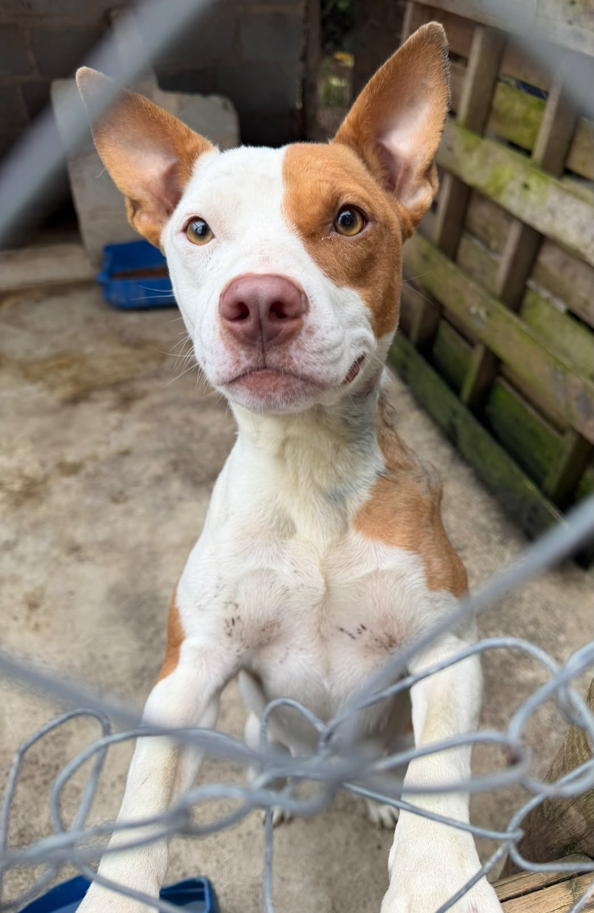

Cada etapa importa. Nosso trabalho une proteção, atenção à saúde e orientação para relações mais conscientes.
Um lugar seguro para recomeçar, com atenção às necessidades e ao tempo de cada animal.
Escuta, proteção e acolhimento
Bem-estar físico e emocional como prioridade, com orientação veterinária e cuidado no dia a dia.
Saúde, alimentação e bem-estar
Aproximar animais e famílias preparadas, incentivando a adoção consciente e a guarda responsável.
Vínculos que se constroem com cuidado
Cada história tem seu tempo. E esse tempo merece respeito.
01
Entender a situação e buscar um ambiente seguro para o animal.
02
Identificar necessidades e orientar os cuidados de saúde e bem-estar.
03
Respeitar o tempo de adaptação, com rotina, atenção e carinho.
04
Preparar o encontro com uma família e uma adoção responsável.
O encontro é só o começo. Antes de adotar, pense na sua rotina, no espaço e nos cuidados que farão parte dessa nova relação.

Um lar é feito de presença, paciência e cuidado.